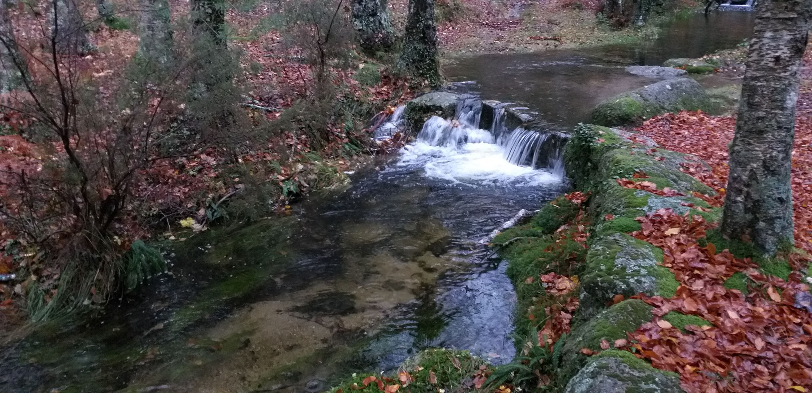

Bem-vindo
à Villa Lijó-Suítes
Natureza, conforto e tranquilidade
no coração do Gerês.
“Mais do que uma estadia,
uma experiência na natureza.”
Agora na TV · MEO
RTP1
A obter programação…A carregar guia MEOEscolha o canal ligado à televisão
